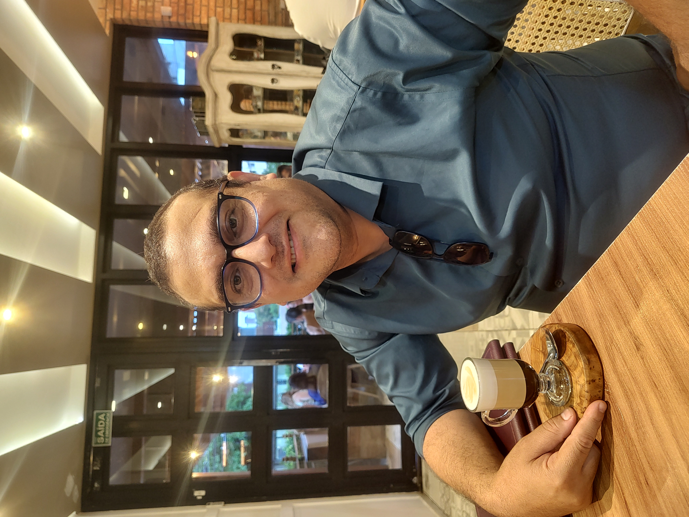

Portal Premium UrbanWatch.app
UrbanWatch.app Premium Portal
Portal Premium UrbanWatch.app
UrbanWatch.app 尊享门户
Elias Silva
Fundador da UrbanWatch.app | Consultor de Inovação Estratégica
Founder of UrbanWatch.app | Strategic Innovation Consultant
Fundador de UrbanWatch.app | Consultor de Innovación Estratégica
UrbanWatch.app 创始人 | 战略创新顾问
Observo sistemas, identifico padrões e transformo aquilo que normalmente passa despercebido em inteligência aplicada, conexões genuínas e soluções de valor.
I observe systems, identify patterns and turn what normally goes unnoticed into applied intelligence, genuine connections and valuable solutions.
Observo sistemas, identifico patrones y transformo lo que normalmente pasa desapercibido en inteligencia aplicada, conexiones genuinas y soluciones de valor.
我观察系统、识别规律，并把通常被忽视的事物转化为应用型智慧、真实连接和有价值的解决方案。
Inovação estratégica e inteligência aplicada
Strategic innovation and applied intelligence
Innovación estratégica e inteligencia aplicada
战略创新与应用型智慧
Cidades, negócios e conexões
Cities, business and connections
Ciudades, negocios y conexiones
城市、商业与连接
Foco em soluções inteligentes
Focused on intelligent solutions
Enfoque en soluciones inteligentes
专注智能解决方案

Perceber o que passa despercebido. Compreender o sistema. Transformar em valor.
See what goes unnoticed. Understand the system. Transform it into value.
Percibir lo que pasa desapercibido. Comprender el sistema. Transformarlo en valor.
看见被忽视的事物，理解系统，并将其转化为价值。
UrbanWatch.app • Observar para Transformar
Conecte-se
Connect
Conéctese
建立联系
Todos os caminhos em um só portal
Every path in one portal
Todos los caminos en un solo portal
一站式连接所有渠道
Acesse os canais de contato, redes profissionais, localização, manifesto e serviços de Elias Silva e da UrbanWatch.app.
Access contact channels, professional networks, location, manifesto and the services of Elias Silva and UrbanWatch.app.
Acceda a los canales de contacto, redes profesionales, ubicación, manifiesto y servicios de Elias Silva y UrbanWatch.app.
访问 Elias Silva 与 UrbanWatch.app 的联系渠道、专业网络、地点、宣言和服务。
WhatsApp
Atendimento direto
Direct contact
Contacto directo
直接联系
E-mail
urbanwatch.app@gmail.com
Manifesto
Manifesto
Manifiesto
宣言
ES por ES na visão do Atlas
ES by ES through Atlas's perspective
ES por ES desde la perspectiva de Atlas
Atlas 视角下的 Elias 自述
Instagram
@urbanwatch.app
LinkedIn
Perfil e visão profissional
Profile and professional vision
Perfil y visión profesional
个人资料与职业愿景
Localização
Location
Ubicación
地点
Google Maps
Facebook
Perfil e conexões
Profile and connections
Perfil y conexiones
个人资料与连接
Serviços e especialidades
Services and specialties
Servicios y especialidades
服务与专长
Conheça as soluções UrbanWatch.app
Explore UrbanWatch.app solutions
Conozca las soluciones de UrbanWatch.app
了解 UrbanWatch.app 解决方案
Portal Financeiro UrbanWatch
UrbanWatch Financial Portal
Portal Financiero UrbanWatch
UrbanWatch 财务门户
Acesse soluções e organização financeira
Access financial solutions and organization
Acceda a soluciones y organización financiera
访问财务解决方案与管理工具
Galeria
Gallery
Galería
图库
Conexões genuínas
Genuine connections
Conexiones genuinas
真实连接
Serviços e especialidades
Services and specialties
Servicios y especialidades
服务与专长
Soluções que conectam pessoas, estratégia e operação
Solutions connecting people, strategy and operations
Soluciones que conectan personas, estrategia y operación
连接人员、战略与运营的解决方案
Atuação profissional
Professional expertise
Actuación profesional
专业领域
Observação, estratégia e transformação
Observation, strategy and transformation
Observación, estrategia y transformación
观察、战略与转化
Consultoria de Inovação Estratégica
Strategic Innovation Consulting
Consultoría de Innovación Estratégica
战略创新咨询
A Consultoria de Inovação Estratégica começa pela leitura profunda do contexto, dos processos e das relações que sustentam cada negócio. Organiza ideias dispersas, identifica oportunidades e transforma sinais do cotidiano em decisões estratégicas. O uso diário e combinado de diferentes inteligências artificiais tem sido fundamental para estruturar hipóteses, comparar alternativas, testar caminhos e acelerar análises. A tecnologia não substitui a visão humana: amplia a capacidade de observar, interpretar e construir. Assim, ideias deixam de permanecer abstratas e passam a ganhar método, prioridade, forma e execução.
Strategic Innovation Consulting begins with a deep reading of the context, processes and relationships that sustain each business. It organizes scattered ideas, identifies opportunities and turns everyday signals into strategic decisions. The daily and combined use of different artificial intelligence tools has been essential to structure hypotheses, compare alternatives, test paths and accelerate analysis. Technology does not replace human vision; it expands the ability to observe, interpret and build. As a result, ideas stop remaining abstract and gain method, priority, form and execution.
La Consultoría de Innovación Estratégica comienza con una lectura profunda del contexto, los procesos y las relaciones que sostienen cada negocio. Organiza ideas dispersas, identifica oportunidades y transforma señales cotidianas en decisiones estratégicas. El uso diario y combinado de distintas inteligencias artificiales ha sido fundamental para estructurar hipótesis, comparar alternativas, probar caminos y acelerar análisis. La tecnología no sustituye la visión humana: amplía la capacidad de observar, interpretar y construir. Así, las ideas dejan de permanecer abstractas y adquieren método, prioridad, forma y ejecución.
战略创新咨询始于对企业环境、流程和关系的深入理解。它整理分散的想法、识别机会，并把日常信号转化为战略决策。每天结合使用多种人工智能工具，对于建立假设、比较方案、测试路径和加速分析至关重要。技术并不取代人的判断，而是扩大观察、理解与构建的能力。由此，想法不再停留在抽象层面，而是获得方法、优先级、形式和执行力。
EstratégiaIA aplicadaDecisão
Portais, operações e experiências digitais
Portals, operations and digital experiences
Portales, operaciones y experiencias digitales
门户、运营与数字体验
Portais, operações e experiências digitais são desenvolvidos para aproximar identidade, informação, atendimento e execução. Cada solução nasce da observação do uso real, das dificuldades do público e dos objetivos do negócio. O uso diário de diferentes inteligências artificiais permite organizar conteúdos, explorar alternativas visuais, revisar fluxos, criar protótipos e acelerar ajustes. Essa colaboração entre visão humana e IA reduz a distância entre conceito e entrega. O resultado são portais, recursos NFC e sistemas operacionais mais claros, úteis, responsivos e alinhados à experiência das pessoas.
Portals, operations and digital experiences are developed to bring identity, information, service and execution closer together. Each solution begins with observing real use, audience difficulties and business goals. The daily use of different artificial intelligence tools helps organize content, explore visual alternatives, review flows, create prototypes and accelerate adjustments. This collaboration between human vision and AI shortens the distance between concept and delivery. The result is clearer, more useful and responsive portals, NFC resources and operational systems aligned with people’s experience.
Los portales, las operaciones y las experiencias digitales se desarrollan para acercar identidad, información, atención y ejecución. Cada solución nace de observar el uso real, las dificultades del público y los objetivos del negocio. El uso diario de distintas inteligencias artificiales permite organizar contenidos, explorar alternativas visuales, revisar flujos, crear prototipos y acelerar ajustes. Esta colaboración entre visión humana e IA reduce la distancia entre concepto y entrega. El resultado son portales, recursos NFC y sistemas operativos más claros, útiles, responsivos y alineados con la experiencia de las personas.
门户、运营与数字体验旨在连接品牌身份、信息、服务和执行。每项解决方案都源于对真实使用场景、用户困难和业务目标的观察。每天使用多种人工智能工具，有助于整理内容、探索视觉方案、检查流程、创建原型并加速调整。人的洞察与人工智能之间的协作缩短了概念到交付的距离。最终形成更清晰、实用、响应迅速，并符合真实用户体验的门户、NFC 资源和运营系统。
PortaisNFCOperações
Sobre Elias Silva
About Elias
Sobre Elias Silva
关于 Elias
Conexões genuínas, visão sistêmica e inteligência aplicada.
Genuine connections, systemic vision and applied intelligence.
Conexiones genuinas, visión sistémica e inteligencia aplicada.
真实连接、系统视角与应用型智慧。
Elias Silva é fundador da UrbanWatch.app e atua como Consultor de Inovação Estratégica. Sua visão combina observação do cotidiano, leitura de sistemas, construção de relações e transformação de oportunidades em soluções práticas. O uso diário de diferentes inteligências artificiais amplia sua capacidade de pesquisar, comparar, organizar ideias, criar protótipos e revisar decisões. Essa integração entre experiência humana e IA reduz tempo, melhora a clareza e aumenta a qualidade das entregas. Para Elias, tecnologia só faz sentido quando fortalece conexões genuínas, otimiza resultados e gera valor real para pessoas e organizações.
Elias Silva is the founder of UrbanWatch.app and works as a Strategic Innovation Consultant. His vision combines everyday observation, systems thinking, relationship building and the transformation of opportunities into practical solutions. The daily use of different artificial intelligence tools expands his ability to research, compare, organize ideas, create prototypes and review decisions. This integration between human experience and AI reduces time, improves clarity and raises the quality of delivery. For Elias, technology only makes sense when it strengthens genuine connections, optimizes results and creates real value for people and organizations.
Elias Silva es fundador de UrbanWatch.app y actúa como Consultor de Innovación Estratégica. Su visión combina observación cotidiana, lectura de sistemas, construcción de relaciones y transformación de oportunidades en soluciones prácticas. El uso diario de distintas inteligencias artificiales amplía su capacidad para investigar, comparar, organizar ideas, crear prototipos y revisar decisiones. Esta integración entre experiencia humana e IA reduce tiempos, mejora la claridad y eleva la calidad de las entregas. Para Elias, la tecnología solo tiene sentido cuando fortalece conexiones genuinas, optimiza resultados y genera valor real para personas y organizaciones.
Elias Silva 是 UrbanWatch.app 创始人和战略创新顾问。他的视角结合日常观察、系统思维、关系建设，以及把机会转化为实际解决方案的能力。每天使用多种人工智能工具，扩大了他在研究、比较、整理想法、创建原型和复核决策方面的能力。人的经验与人工智能的结合可以节省时间、提高表达清晰度并提升交付质量。对 Elias 而言，只有当技术能够强化真实连接、优化成果并为个人和组织创造实际价值时，它才真正有意义。